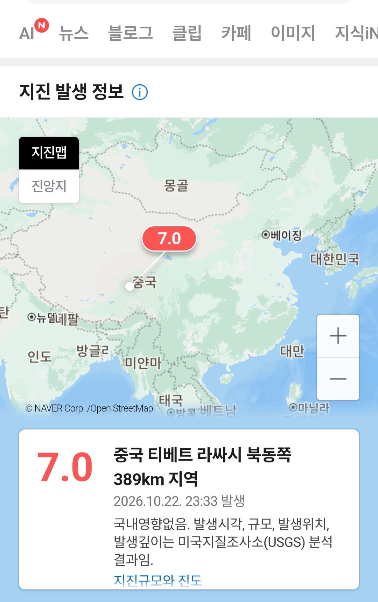

속보 중국 지진7.0
댓글
7.0 ㅎㄷㄷ
지진은 지금 중국 지진이 문제가 아니라 나스닥이랑 반도체가 지진났다 안카요!
나스닥 엄청 반등하는중이던데
7.0이면 ㄷㄷㄷㄷㄷㄷㄷㄷㄷ
미친
산샤댐쪽이었어야 했는데 ㄲㅂ
어우 네팔에 또 영향 안가려나
티벳이라 저쪽도 같은위험있을듯
완전 내륙에서 7.0 ㄷㄷㄷ
인도판 섭입...
티벳이네 아이고
7.0이면 큰데..?
와 저 한가운데서 7이나 일어난적이 있나 ㄷㄷ
있음 애초에 사천이나 티벳쪽 지형이 대륙판간 충돌로 만들어진 지형이라
김정은 저기서 점프했냐.
그걸로 골절되서 공식석상에 안나오는거 아닌가 싶다.
중국은 서부지역이 좀 안정된 지반이 아닌듯. 스촨도 그렇고
뭐저렇게 큰게터진대 ㄷㄷ
워메
사천 근처네
저 동네에 뭐 있나
히말라야산맥 근처라 저기 지진 존나 많이남
인도판이 유라시아판과 충돌하면서 티벳과 쓰촨고원 아래로 섭입해 들어감
티벳 네팔 제발 그만 ㅜ
진앙은 티베트 나취(那曲, Nagqu)시 바칭(巴青, Baqên)현이고, 칭하이성 경계와 가까운 고원 지대입니다. 대도시는 없고, 주변은 인구가 적은 현(縣) 소재지 정도입니다.
현재까지 나온 정보 (01시 기준)
발생 시각은 현지시간 10월 22일 밤 10시 33분(한국시간 23시 33분)이고, 깊이는 18km입니다. 중국지진대망(CENC)도 규모 7.0, 진원 깊이 10km로 발표했습니다.
미국지질조사국(USGS)의 평가: 피해가 발생할 가능성이 높고, 일부 사망자가 나올 수 있으며, 피해가 광범위할 수 있다고 봤습니다. 약 13만 2천 명이 중간(진도 V)에서 심각(진도 VIII) 수준의 흔들림을 겪은 것으로 추정했습니다. 피해 경보 단계는 '주황색'입니다.
산사태 영향 면적은 상당하지만 노출된 인구는 거의 없는 것으로 추정됐습니다.
여진: USGS 목록에 따르면 약 40분 뒤인 00시 12분쯤 거의 같은 위치에서 규모 5.2 여진이 있었습니다.
사상자·피해: 아직 공식 집계는 나오지 않았습니다. 이 지역은 몇 주 전 치명적인 홍수 피해를 입은 곳이기도 합니다.
베이징이 아니라 아숩네요
7? 저거때문에 또 네팔지역쪽 난리나려나?
핵실험 한거 아님?
8좋아하던데 1만 더 올리지
중국은 지진나면 안된다..................
빌어먹을 핵발전소가 다 한국쪽으로 바람불어 ㅜㅜㅜㅜㅜㅜㅜㅜㅜ
그건 해안가.... 저긴 내륙
또 티벳네팔이여?
7??? 저기가 그리 나는 곳이던가
티베트를 중국이라 불러야한다니 ㅠㅠ
중국은 아니잖아 티베트인데 ㅅㅂ
티베트는 하필이면 히말라야 판의 경계에 있어서,..
티베트 사람들 안그래도 힘드신데 아이고....
감시하는 공안들이나 좀 많이 디지고
티베트인들은 무사하시길
FREE TIBET
또 네팔 같은 일 안 생겼으면 하네..
7.0 강진인가